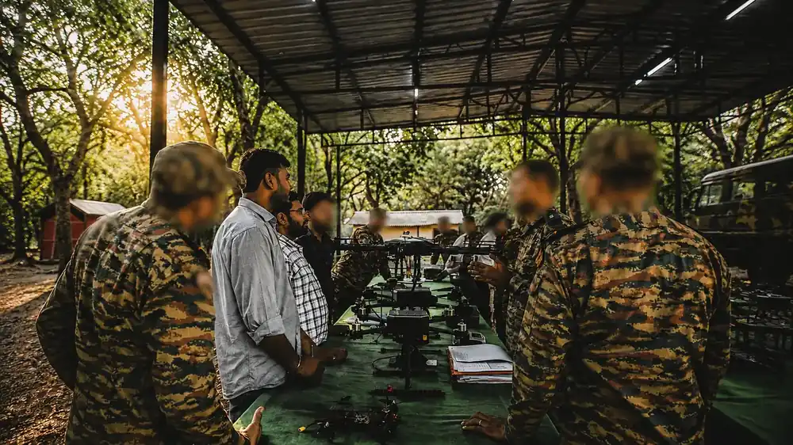

Home / Problems We Solve / Correcting artillery fire safely
DefenceArtillery fire correction: observe the fall of shot without an exposed observer
Seeing where rounds land usually means putting a person at risk, and passing corrections back takes time.
What is Direction of Own Artillery Fire (DOAF)?
To direct friendly fire, someone has to see where the rounds land. Traditionally that means an observer close to the target, exposed and limited by what can be seen from the ground.
Direction of Own Artillery Fire means watching where rounds land and sending corrections to the guns. The observer needs a clear view of the target area, which traditionally means getting close to it.
A UAV on station gives the fire-direction team that view from above. Live imagery lets them observe each round and adjust from a safe distance.
Signs you have this problem
- Observers must move forward to see the target area
- Terrain or smoke hides the fall of shot
- Corrections rely on voice relay and take time
- Target positions are estimated from ground observation
What to look for
- Live EO/IR video to the fire-direction centre
- Target geolocation with coordinates at the ground station
- Encrypted command and video links
- Navigation that keeps working if GPS is jammed
The main causes
Exposure
A forward observer must get close enough to see the target area.
Line of sight
Terrain and smoke hide the fall of shot from the ground.
Delay
Corrections passed by voice take time, and time matters.
Before and after
How to solve it, step by step
- 1
Launch
Send the UAV on station over the target area.
- 2
Locate
Get target coordinates at the ground station.
- 3
Observe
Watch the fall of shot on live video.
- 4
Correct
Pass adjustments to the guns and observe the next round.
Common questions
How do drones help with artillery fire?
A drone over the target area streams live video, so the team can see the fall of shot and pass corrections without an observer forward.
Which Decouvertes drone supports DOAF?
Vision 2.0 lists DOAF among its applications, along with surveillance and training.
Can a DOAF drone work under jamming?
That is why GPS-denied navigation matters for this role. Vision 2.0 is built with it for contested areas.
Related problems
Battery limits on overwatch
Every free-flying drone must come down to recharge, which leaves a gap in what you can see.
Read moreMonitoring large crowds
At large events, ground cameras and officers can’t see how the whole crowd is moving.
Read moreOne drone isn’t enough
Some jobs are too large or too risky for one aircraft, and many separate pilots are hard to coordinate.
Read moreFacing this problem?
Tell us about your mission and our engineers will suggest the right platform or configuration.